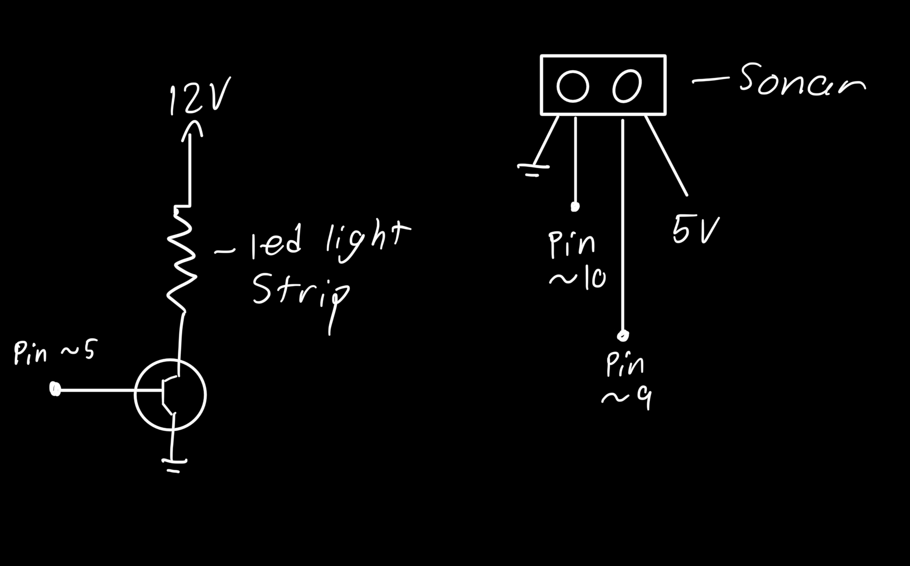
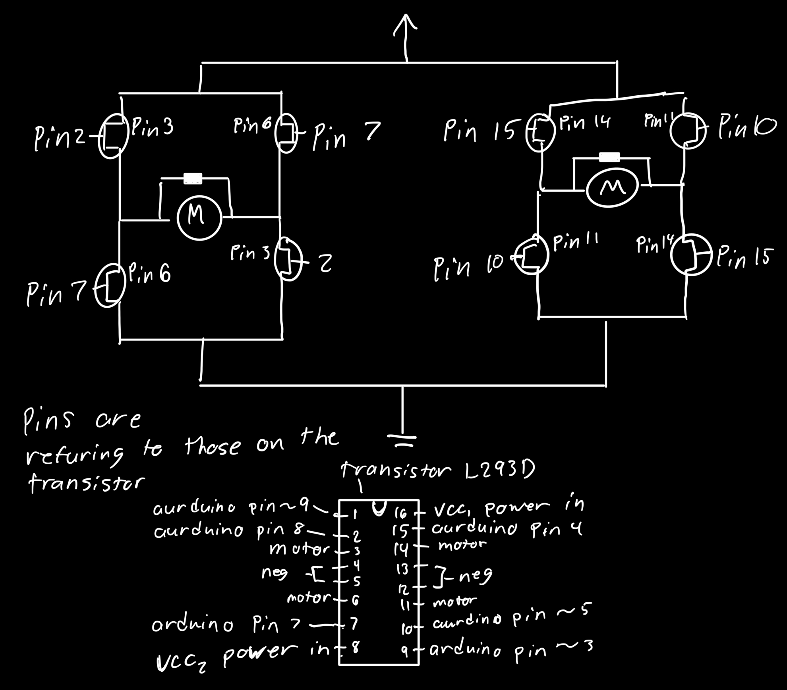

The image left is my sonar actuated higher voltage light strip. i built a system that turns on the led light strip when i wave an object within 15 cm of the sonar.
The image left is my sonar actuated higher voltage light strip. i built a system that turns on the led light strip when i wave an object within 15 cm of the sonar.

Here is the image of my schematic. I used a 12v external power supply plugged into the bread board rails, with a IRLZ44N mospet controlling the power to the led light strip. the sonar sensor was plugged into the aurduino which then in turn controlled the mospfet and all share a common ground. The max current for the mospfet is 47 amps at 25 degrees celcius, the leds take a total of 10.2 volts to power leaving an acess of 1.8 volts and if we use a resistance of 180 ohms then we end up with a total current draw of 30 mA for the light strip which is less than the 47v max meaning we are within safe operating standards.
Here is my code snippet for the ultrasonic sensor actuated light strip:
//ultra sonic sensor library. could not get the one in the powerpoint from class to work
#include
//dining the ultrasonic trigger pin
#define TRIG_PIN 9
//defining the ultrasonic echo pin
#define ECHO_PIN 10
//defining the measurable distance in cm
#define MAX_DISTANCE 200
//creating an untrasonic sensor object
NewPing sonar(TRIG_PIN, ECHO_PIN, MAX_DISTANCE);
//defineing the mosfet gate control pin
const int ledPin = 5;
//defining the distance threashold for toggleing the lights on and off
const int toggleDistance = 15;
//boolean to track light state
bool lightState = false;
//boolean to prevent reapeat or flickering toggles
bool objectDetected = false;
//setup
void setup() {
//start searial monitor for debuging
Serial.begin(9600);
//set led pin as output to control mosfet gate
pinMode(ledPin, OUTPUT);
}
//main loop that controls the components
void loop() {
//measure the distance in cm
int distance = sonar.ping_cm();
//print distance on searial monitor
Serial.println(distance);
//check if the reading is valid
if (distance > 0 && distance < toggleDistance) {
//if the object newly detected
if (!objectDetected) {
//toggle light state
lightState = !lightState;
//mark object as detected to prevent retriggering
objectDetected = true;
}
//else statement if the if statement is false
} else {
//reset detection when object moves
objectDetected = false;
}
//if light state is on
if (lightState == true) {
//turn led light strip to 80% brightness
analogWrite(ledPin, 204);
//else statment
} else {
//turn led light strip all the way off
analogWrite(ledPin, 0);
}
//small delay for stability
delay(50);
}

Here is a gif of my sonar actuated light strip!


1. for question one I am using a IRLZ44N mosfet which at 25 degrees celcious can have a max current between pins 2 and 3 of 47 A. 2. for question 2 the first photo on the left depicts my scimatic using an arduino, IRLZ44NPPF mospfet, 1N4001 flyback diode, and a 12v DC motor. 3. for question 3 the drawing of my schematic is shown left and my psudo is shown bellow the image.
Here is my psudo code:
const int enableA = 9;
const int in1 = 8;
const int in2 = 7;
const int enableB = 3;
const int in3 = 5
const in in4 = 4
void setup
pinMode(in1, output);
pinMode(in2, output);
pinMode(in3, output);
pinMode(in4, output);
analogwrite(enableA, set speed here)
analogwrite(enableB, set speed here)
void loop
digital write(in1, high)
digital write(in2, low)
digital write(in3, high)
digital write(in4, low)
delay(1000)
digital write(in1, low)
digital write(in2, high)
digital write(in3, low)
digital write(in4, high)
delay(1000)
digital write(in1, high)
digital write(in2, low)
digital write(in3, low)
digital write(in4, high)
delay(1000)
digital write(in1, low)
digital write(in2, high)
digital write(in3, high)
digital write(in4, low)
delay(1000)